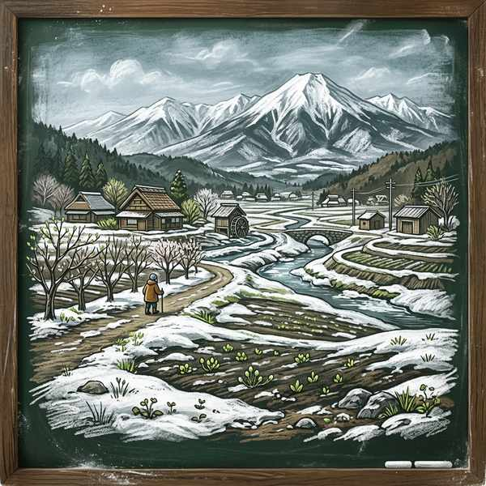

歌唱曲⑥ (花の街・早春賦・帰れソレントへ)
戦後の復興を祈って作られた「花の街」、日本の春の訪れを情緒豊かに表現した「早春賦」、そしてイタリア歌曲の珠玉の名曲「帰れソレントへ」の3曲を解説します。テストで出題される作詞・作曲者や、楽譜から読み解く特徴的な音楽記号・調の関係を整理しましょう！
1. 「花の街」の要点整理
幻想的で美しい花の街の情景を歌い上げる、戦後の名歌曲です。
① 基本データ
- 作詞：江間章子（えましょうこ）（「夏の思い出」の詩人としても有名です）
- 作曲：團伊玖磨（だんいくま）（日本の代表的なオペラ「夕鶴（ゆうづる）」を手がけた作曲家）
- 拍子：4分の2拍子
- 調：ヘ長調（へちょうじょう）
② 定期テストに出る特徴と楽典知識
- フレーズの開始 ➔ この曲は、それぞれのフレーズがすべて「8分休符」で始まっているのが大きな特徴です。
- ヘ長調の音階（スケール） ➔ ヘ長調（主音がファ）では、必ずロ音（シの音）にフラット（♭）が1つつきます。
③ 登場する音楽記号

メッゾ ピアノ (mp)
意味：少し弱く

フォルテ (f)
意味：強く

デクレシェンド（decresc.）：意味は「だんだん弱く」（記号「＞」と同じです）
2. 「早春賦（そうしゅんふ）」の要点整理

長野県安曇野の春めく情景に寄せてつくられた、日本の唱歌。
① 基本データ
- 作詞：吉丸一昌（よしまるかずまさ）
- 作曲：中田章（なかたあきら）（大正〜昭和期の音楽教育家・作曲家）
- 拍子：8分の6拍子
- 形式：二部形式（A-B）
② 歌詞の意味（古典記述対策・必出！）
- 時にあらずと ➔ まだその時ではないと
- 角（つの）ぐむ ➔ 芽が出始める（葦の角のような芽が水辺から顔を出す様子）
- 知らでありしを ➔ 知らないでいたものを
- 急かるる（せかるる） ➔ せかされる（春の訪れを心待ちにして急き立てられる気持ち）
③ 登場する音楽記号

メッゾ フォルテ (mf)
意味：少し強く

ピアニッシモ (pp)
意味：とても弱く

クレシェンド（cresc.）
意味：だんだん強く

リタルダンド (rit.)
意味：だんだん遅く
3. 「帰れソレントへ」の要点整理
美しいナポリ湾とオレンジの園を歌い、恋人の帰郷を願うイタリアの歌曲。
① 基本データ
- 作曲：E. デ・クルティス（Ernesto de Curtis）（イタリアの作曲家）
- 速度記号：Moderato（モデラート）（中ぐらいの速さで）
- 拍子：4分の3拍子
- 使われている調：ハ短調（はたんちょう） ➔ 前半は哀愁漂う短調。
ハ長調（はちょうじょう） ➔ 後半（サビ）は明るく開けた長調へ変化します。 - 曲の背景：原曲はイタリア語で書かれており、イタリア南部のナポリ湾に面した美しい港町ソレントの情景を歌っています。
② 調の関係：同主調（どうしゅちょう）
ハ長調とハ短調のように、「主音（この場合はド）」が共通している長調と短調の関係を同主調（どうしゅちょう）と呼びます。この曲では、同主調への劇的な転調によって曲の雰囲気が大きく変化します。
③ 登場する音楽記号
変化記号 ナチュラル（♮）：意味は「元の高さで」
※シャープ（♯）やフラット（♭）で変化させた音を、元の音の高さに戻すときに使用します。

フェルマータ
意味：その音符（休符）をほどよくのばす

ア・テンポ (a tempo)
意味：もとの速さで（rit.で遅くなった後に元の速さに戻します）
🔥 定期テスト対策・暗記のコツ
① 同主調の判定（超頻出！）
「主音が同じで、長調と短調が入れ替わる関係（例：ハ長調とハ短調）」を「同主調」と呼びます。平行調（調号が同じで、主音が異なる関係。例：ハ長調とイ短調）との区別が記述問題や記号選択問題で非常によく問われます！
② 「花の街」の作曲者とオペラ
「花の街」を作曲した團伊玖磨は、日本の有名なオペラ「夕鶴（ゆうづる）」の作曲家としても有名です。この2つの作品はセットでテストに出るため、確実にリンクさせて覚えておきましょう。
③ ヘ長調の♭の位置と音階名
「ヘ長調で必ずフラット（♭）がつく音は何か」に対し、答えは「ロ音」（シの音の日本語音名）です。テストでは日本語の音名（ハニホヘトイロ）で答えるように指定されることが多いため、注意して覚えましょう！